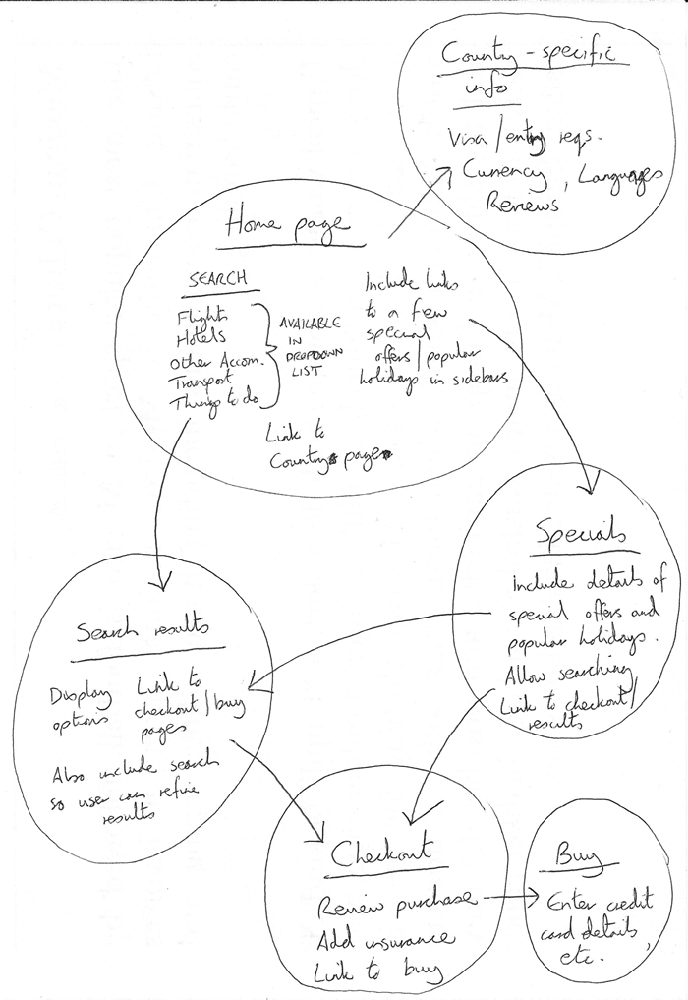

Once you've planned out the structure of a simple webpage, the next logical step is to try to work out what content you want to put on a whole website, what pages you need, and how they should be arranged and link to one another for the best possible user experience. This is called Information architecture. In a large, complex website, a lot of planning can go into this process, but for a simple website of a few pages, this can be fairly simple, and fun!
-
Bear in mind that you'll have a few elements common to
most (if not all) pages — such as the navigation menu,
and the footer content. If your site is for a business,
for example, it's a good idea to have your contact
information available in the footer on each page. Note
down what you want to have common to every page.

-
Next, draw a rough sketch of what you might want the
structure of each page to look like (it might look like
our simple website above). Note what each block is going
to be.

-
Now, brainstorm all the other (not common to every page)
content you want to have on your website — write a big
list down.

-
Next, try to sort all these content items into groups,
to give you an idea of what parts might live together on
different pages. This is very similar to a technique
called
Card sorting.

- Now try to sketch a rough sitemap — have a bubble for each page on your site, and draw lines to show the typical workflow between pages. The homepage will probably be in the center, and link to most if not all of the others; most of the pages in a small site should be available from the main navigation, although there are exceptions. You might also want to include notes about how things might be presented. 